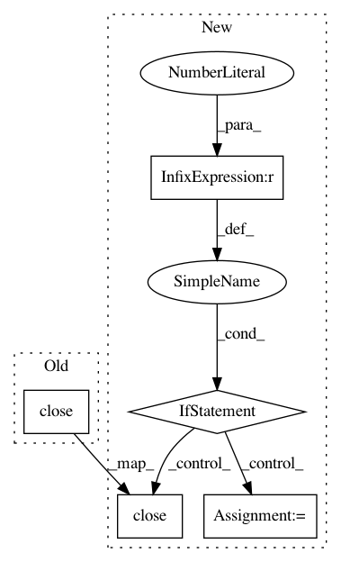

26600be023661a6606581b5e14cf939e90eea549,skll/data.py,,load_examples,#Any#Any#Any#Any#Any#,122
Before Change
sparse))
// Wait for processes to complete and store results
pool.close()
pool.join()
ids = ids_result.get()
classes = classes_result.get()
features, feat_vectorizer = features_result.get()
After Change
// memory (even though this requires reading the file multiple times).
// Do this using a process pool so that we can clear out the temporary
// variables more easily and do these in parallel.
if MAX_CONCURRENT_PROCESSES == 1:
ids = _ids_for_gen_func(example_gen_func, path, ids_to_floats)
classes = _classes_for_gen_func(example_gen_func, path, tsv_label)
features, feat_vectorizer = _features_for_gen_func(example_gen_func,
path, quiet, sparse)
else:
pool = Pool(min(3, MAX_CONCURRENT_PROCESSES))
ids_result = pool.apply_async(_ids_for_gen_func,
args=(example_gen_func, path,
ids_to_floats))
classes_result = pool.apply_async(_classes_for_gen_func,
args=(example_gen_func, path,
tsv_label))
features_result = pool.apply_async(_features_for_gen_func,
args=(example_gen_func, path, quiet,
sparse))
// Wait for processes to complete and store results
pool.close()
pool.join()
ids = ids_result.get()
classes = classes_result.get()
features, feat_vectorizer = features_result.get()
return ExamplesTuple(ids, classes, features, feat_vectorizer)
def convert_examples(example_dicts, sparse=True, ids_to_floats=False):
In pattern: SUPERPATTERN
Frequency: 4
Non-data size: 5
Instances
Project Name: EducationalTestingService/skll
Commit Name: 26600be023661a6606581b5e14cf939e90eea549
Time: 2013-09-05
Author: dblanchard@ets.org
File Name: skll/data.py
Class Name:
Method Name: load_examples
Project Name: nilearn/nilearn
Commit Name: ea1bdc71e554847b6b982058547e0b26bbd20faf
Time: 2017-12-24
Author: moritz.boos@uni-oldenburg.de
File Name: nilearn/plotting/tests/test_matrix_plotting.py
Class Name:
Method Name: test_matrix_plotting
Project Name: erikbern/ann-benchmarks
Commit Name: 03feb54e94e149e35047325a800ee0a0626bcd89
Time: 2018-07-10
Author: johan.park@kakaocorp.com
File Name: install.py
Class Name:
Method Name:
Project Name: gooofy/zamia-speech
Commit Name: 85861ea5c5320518267405bef050a0dab933e069
Time: 2018-02-17
Author: guenter@zamia.org
File Name: phone_gen.py
Class Name:
Method Name: